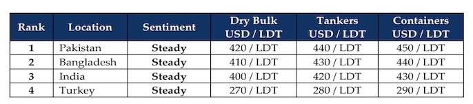

inWeekly Demolition Reports16/02/2026

The second week of February brought on a really confusing spin to the markets, with fundamentals across the board performing bizarrely (compared to last week’s performance), as after a volatile beginning to the month, the Baltic Exchange Dry Index and even oil futures found steady ground this week, while even the U.S. Dollar firmed against all ship recycling nation currencies except India (ain’t that a switch), as did local steel plate prices, which also saw India slip the car into reverse and backpedal nearly all of its recent gains.
In an expanded view, the Baltic Exchange’s Dry Bulk Index fell 0.6% this week, pressured primarily by the larger-sized segments, as Capes fell nearly 2% and the Panamax index slipped a matching 0.6%, Supras marched (improved) an impressive 1.8% of their own. Sliding into the barrel, we see WTI crude oil futures pull a drone maneuver and hover around (a lower) USD 62.8/barrel, as markets, investors, and traders collectively worry about the bacteria brewing under the U.S./Iranian nuclear peace carpet once again, and fears over ongoing supply being drastically affected could have a devastating effect on oil prices the world over.
But for the ship recycling world, it’s likely to be even quieter as Chine enters its New Year holiday period, an already subdued (in terms of volumes, not price/demand) international ship recycling market is more than likely to be deprived of potential recycling candidates even further. The incoming Year of the Horse hopefully brings with it some better times for the industry, after what has been (and seemingly continues to be) a record low delivery of recycling tonnage over the last several years, and depreciating levels from the highs of USD 600/LDT down to well below USD 400/LDT, have been a jolt to end-of-life residual values of ships and the books of owners/operators.
Recycling markets do seem to have stabilized within the region of the turbulence and for the time being, events are conspiring in favor of sub-continent markets that paint a brighter picture moving forward. The much anticipated (and long overdue) Bangladeshi elections were finally settled this week with an expected victory for the second largest party in the country (behind disgraced and banned former PM Sheikh Hasina’s party), as the BNP claimed power with over a 2/3 majority. The Pakistani market remains the firmest for another week as the cheap flood of Iranian imports has ceased for the time being, and Gadani steel plate prices continue to dominate industry levels.
And with currency concerns consuming India’s sanity since the start of the year having stabilized this week as well (even showing signs of improvement) and Turkey on the far side slipping back into obscurity after a brief binge of RoRos, overall, it does seem that things couldn’t get any worse than they have, and levels may have reached a state of equilibrium for the year (unless something happens). The only thing left is for supply to deliver on its side of the bargain.
For Week 7 of 2026, GMS Market Rankings / vessel indications are as below.

📄 Download PDF: Ship-recycling-market-insight-Week-07-02-13-2026-Confusing_Valentines.pdfSource: GMS,Inc.https://www.gmsinc.net/gms_new/index.php/web